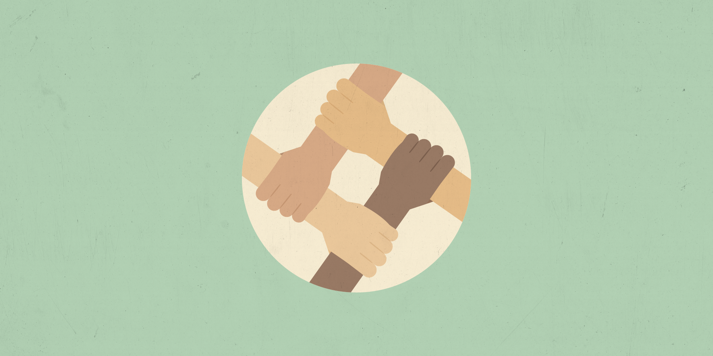

Doar é mais do que um ato de generosidade; é uma oportunidade de
transformar vidas e fortalecer causas que precisam de apoio. Muitas
ONGs enfrentam desafios para manter suas iniciativas devido à falta
de recursos e visibilidade. Ao contribuir, você ajuda a garantir que
projetos sociais continuem impactando comunidades, promovendo
mudanças reais e sustentáveis. Com nossa plataforma, sua doação
chega de forma segura e transparente a quem realmente precisa,
permitindo que você acompanhe o impacto gerado. Seja parte dessa
rede de solidariedade e faça a diferença!
